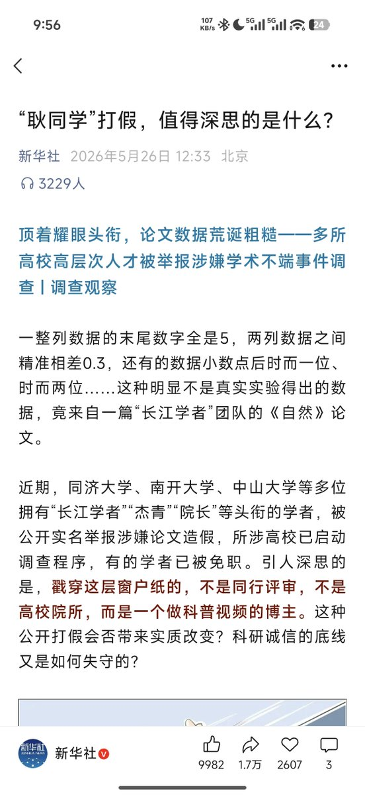

拱北靠北
@psyofsouthwest
@OuYangZhuaiBai 会扩大化变成学术文革吗

欧阳拽白
@OuYangZhuaiBai
耿同学学术打假正式获得中共宣传层面背书，预示着国内一场学术反腐运动正式启动。
那些院士团队、长江学者、杰青，如果没有公职的话，共产党从监委纪委层次其实很难动的，都说硬骨头好啃、软骨头难嚼。
因此这次高层准备发挥群众优势，借各位肄业博士生之手，掀翻这些学术门阀世家。 https://t.co/6pIxWLnTc1